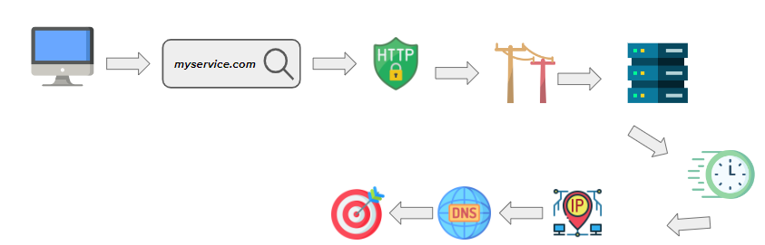

Student Learning Portfolio
Unit II: Streaming Service
SECTION 1
Decrepitly, I am peering into the window, I sense the usual dullness that envelopes creativity. Sometimes I am deathly afraid of my response, knowing that creation is made without freedom of control, this fear is not lonely. In reading Fear and Loathing in Las Vegas I came to an unrelated realization. That herds of creators go unnoticed in their similarities. Constant trends and challenges, all formulas of the same variable. To fit in, in order to rise amongst the crowd in popularity. This thread I'm spinning doesn't come without it's own bias. That's because I think that the same ideas and common trends are all too often followed, like frenzied cattle shepherded by dogs of familiarity, with hounds of content standing amongst their own self admiration. But I knew a solution existed, it has and always will. Communes for artists to share and discuss artforms exist in patches everywhere across the vast internet. My goal, is to emulate this beautiful occurrence under a network service. My view of streaming and social media services tends to be askew from many types of users who are avidly connected to the online world. Despite that, I don't see myself as one who is independent from the alluring vice grip of our blue-light emitting screens. I give in to it's various temptations and wander the rabbit holes of information, constantly falling deeper and deeper into Wonderland. Naturally, one would think that a streaming service would define itself as the thesis of this strategy, popping out it's captivating sides to draw more weary eyes to it's electrical center. But advertised content is not for the creative, it is for the consumer, and it is those who only consume who fall into the murky cups of ever-leaking potential in the crazed tea party of the internet. The ideal streaming service to contradict these would rather be oriented towards the fruits of creativity, a freely uploaded place for creators to send and receive feedback. For those who are only viewers of content, a free and plentiful source of bounties of entertainment and thought provoking content alike by underground artists and animators. I feel this is important to me, because sharing the vitality of web pages like these are the very resources that propel animation forward, serving as inspiration, community, and artistic knowledge, ultimately stemming from the research of one's own intuitive mind. In a modern world where everything by everyone is instantly accessible at our fingertips, it's important to know the connection between artist and artwork, how the content appeals to you and possibly brings motivation. This forms the content that is readily available to the users. Now, as for the subscription system, it is primarily free to access. Make an account to post and comment, as well as an optional service to become a supporter for $5.00 a month, the perks of this are special recognition for helping the site and extra cosmetic features for the layout of your account page. This content serves as a canvas for a customizable layout. Now that I think of it, the concept is similar to Myspace. Dang, I hope they don't sue me. The freedom of free is a beautiful sound to me, and sounds remind me of a certain question I thought to myself sometime in the past. In the makings of films, there's more than likely a soundtrack or score, but how does someone use music without paying for it in their valuable budget? Simply put, Creative Commons. Though another issue arises, finding the right music for your film and making sure you have creative access to using it, it can be hard to do that. As another of the varying options of finding music that of which is under free use, the service will also promote our more musically oriented creators to upload to the site's Free Use Music page, for it just might help some people out. To summarize the designs of my hypothetical streaming service, I view the service as being a free and accessible place of community and feedback. Sharing of opinions and advice along with content made to share the souls of the artists, a place where the creative control is in their hands. Communities to grow and share their experiences and artwork they have accumulated on their journeys in life. The concept is strong, but the execution of its growth and popularity would be an interesting coin flip.
SECTION 2
The Digital Divide does ultimately have an effect on the functionality of my streaming service, mainly because it isn't very adjustable towards offline viewing given the interconnected socialization components of the service that serve as the heart of it's web traffic. The digital divide is an insurmountable issue that cannot be resolved easily, mainly given its vastness and its commonality of occurrence. Users experiencing a lack of internet accessibility wouldn't even know about this service, let alone have the frequency of visiting the application, which isn't awfully helpful to the service itself. They can't visit it and therefore would have difficulty managing to interact with the community. When it comes to my found knowledge of the Digital Divide, I come across this meaning: A separation of those who have and those who have not, though because of growth, this term is not so black and white as the saying makes it appear.. I find myself grateful to be a person who has gotten the ability to see the world electronically and access the feeds of knowledge, the grace of access to the romanticized description of a sub-world aligned with our own. That subworld is the internet, and the masses of culture that follow it. It's safe to say that this invention of society has not only proven its popularity but has reshapen the practices of human socialization. Britannica does a fantastic job of informing me of the more intricate aspects of our subject. I feel as though the third paragraph does an excellent job of bringing to light the vital sources of growing culture and affinity of internet access, that of which has led to its growing popularity since its conception. That is, of the idealistic American family, or more precisely, its concept. Here's what I mean. “young urban men and women with high levels of education who lived in small families with children were the greatest adopters of new media.” Internet is the standard of connection and entertainment in modern society, and is heavily adopted by these families, these everyday standard-living people. The standard American would have access to this, growing or possessing the skills and experience for traversing it and the free time to use it consistently. The source refers to using these skills to pursue “professional or political interests” It also knows that this doesn't paint the whole picture, mainly because of the high amounts of people who don't use the internet for that function, but instead falling under the [retrospective] callings of large corporations and media, giving into the fallacies of these nicely presented products and constant tellings that “you need this entertainment device!”, so they desire it, its shiny appeal and smooth functionality. This is the side of the Divide of those who sway towards connectivity. The side that isn't secured has different problems. Living in the world of high-speed connectivity all the while possessing less of the benefits, not having the constant usability or having a limited grasp on accessibility. "Digital divide." Britannica School, Encyclopædia Britannica, 17 Nov. 2014.school.eb.com/levels/high/article/digital-divide/609569. Accessed 20 Oct. 2024.
faultTolerance by Gavin Stetson is licensed under CC BY 4.0

{kind=link}